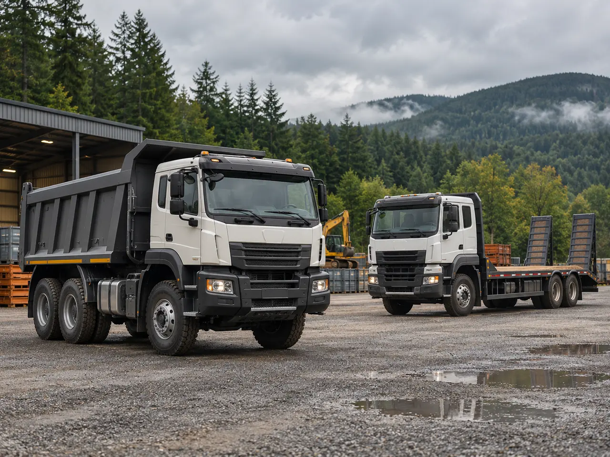
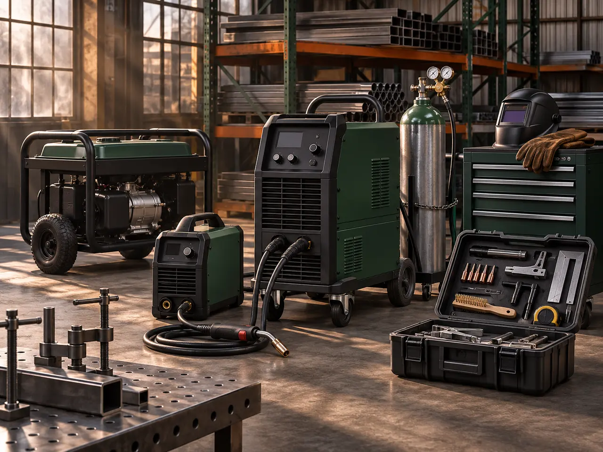
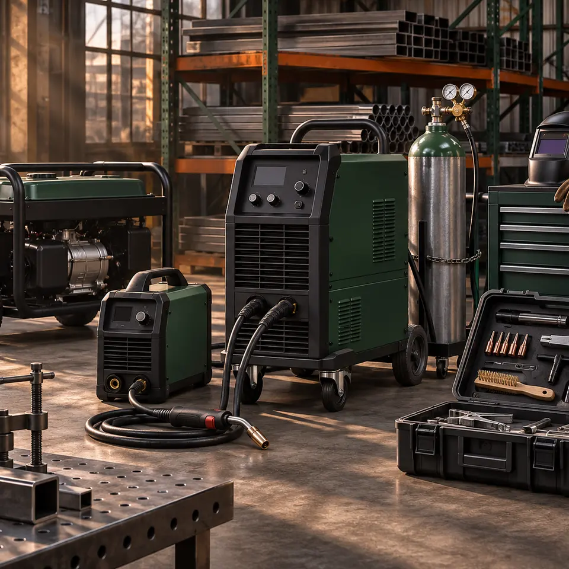
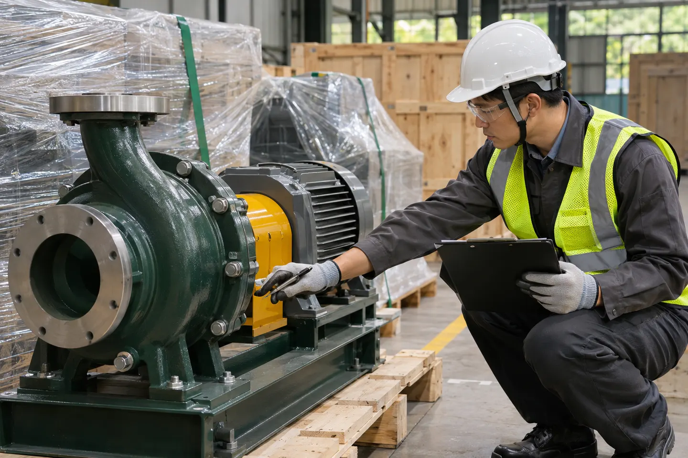

Procurement & Equipment Supply
Critical Equipment.
Sourced Right.
Delivered Ready.
Industrial, oil-and-gas, construction and agricultural equipment sourced to specification and delivered with accountability.
Clear Solutions,Dependable Delivery
Procurement Without The Guesswork.
Blumera helps organisations source the equipment they need without navigating fragmented vendors and uncertain specifications alone. We coordinate requirements, suitable supply options, documentation and delivery so procurement decisions stay clear, commercially sound and accountable.
What We Source
Supply Categories
Explore the equipment groups we source against defined technical, commercial and delivery requirements.

01 / Fleet & TransportHeavy-Duty VehiclesTrucks, tippers, tractor heads and special-purpose vehicles.Explore Category → 02 / Plant EquipmentConstruction & EarthmovingExcavators, loaders, graders and site equipment.Explore Category →
03 / Height & HandlingLifting & Access EquipmentBoom lifts, forklifts and material-handling equipment.Explore Category →
02 / Plant EquipmentConstruction & EarthmovingExcavators, loaders, graders and site equipment.Explore Category →
03 / Height & HandlingLifting & Access EquipmentBoom lifts, forklifts and material-handling equipment.Explore Category →

04 / Energy & IndustryOil, Gas & IndustrialPumps, valves, fittings and production-support equipment.Explore Category →
05 / FabricationWelding & FabricationWelding machines, cutting systems, tools and consumables.Explore Category → 06 / AgricultureAgricultural MachineryMechanised farming, processing and irrigation equipment.Explore Category →
07 / Aftermarket SupplyOEM Parts, Tools & ConsumablesReplacement parts, attachments and industrial consumables.Explore Category →Use the arrows or keyboard to browse. Select any card to open its page.
Manufacturer-neutral sourcing, coordinated to client specifications.
Manufacturer-neutral sourcing lets the specification lead the decision.
Where We Supply
Industries Served
Commercial procurement support for organisations that depend on fit-for-purpose equipment.
The relevant industries, equipment types and buyer requirements are explained on each supply-category page.
How We Procure
From Requirement To Handover.
A disciplined sequence keeps specifications, commercial options and delivery responsibilities visible from the beginning.
Start With Your Requirement- 01
Submit Requirement
Share the equipment, quantity, specification and delivery location.
- 02
Review Specification
We clarify technical and commercial requirements before sourcing begins.
- 03
Source & Evaluate
Suitable manufacturer and vendor options are compared against the brief.
- 04
Inspect & Document
Applicable checks and supply documentation are coordinated.
- 05
Coordinate Delivery
Logistics and destination requirements are aligned for delivery.
- 06
Complete Handover
Supply is documented and handed over against agreed requirements.
Procurement Assurance
Clarity Before Commitment.
Equipment procurement carries specification, supplier and delivery risk. Blumera structures the sourcing process around defined requirements, appropriate supplier checks, commercial visibility and the documentation applicable to each supply.
- Specification matching
- Supplier and option review
- Applicable inspection coordination
- Supply and handover documentation
Dependable Supply, Handled With Care.
Blumera Global Services Ltd is a Nigerian procurement and equipment supply company supporting organisations across industrial, energy, infrastructure and agricultural value chains.
- Coverage
- Nigeria
- Offices
- Lagos & Port Harcourt
- RC Number
- 9636057
Start An Enquiry
Tell Us What You Need To Source.
Send the equipment description, preferred specification, quantity and delivery location. We will respond with the information needed to move the enquiry forward.
Submit An RFQ